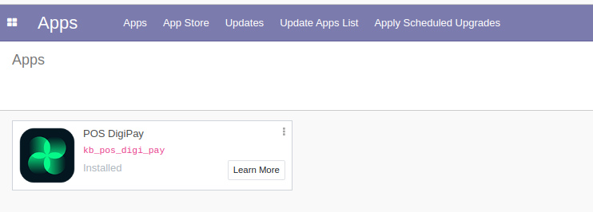
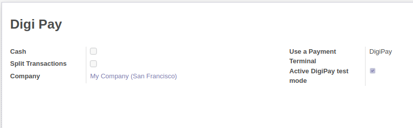
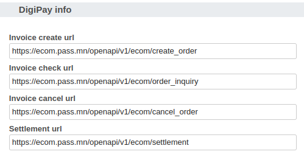
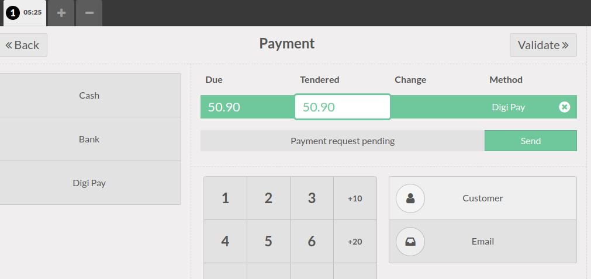
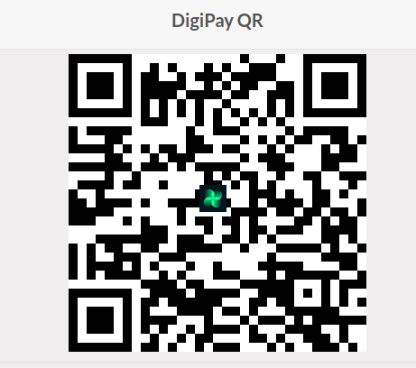
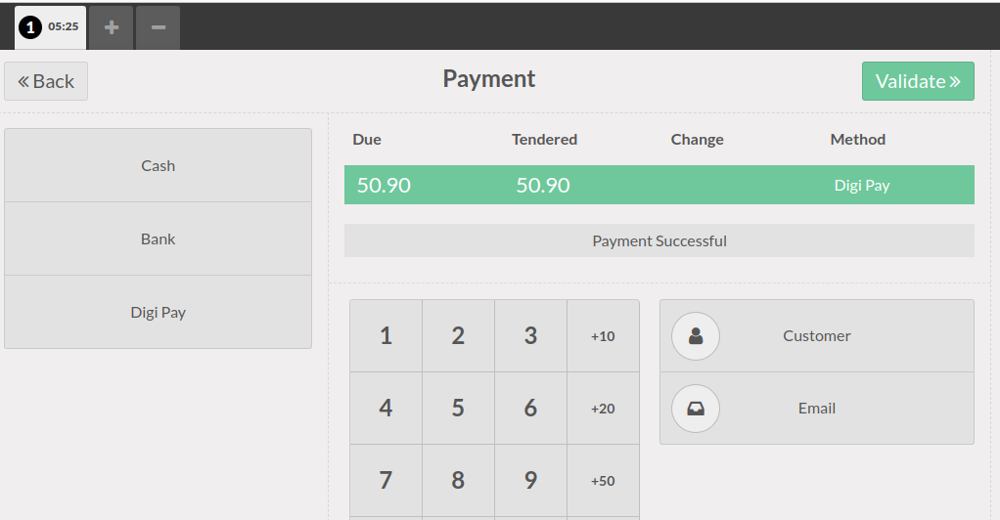

Disclaimer
This plugin is only available in the territory of Mongolia. Please don’t download this plugin from other regions and countries.
DigiPay
Гар утсандаа Digi Pay аппликэйшнийг суулган картуудаа холбоод шимтгэл хураамжгүйгээр гүйлгээгээ хийхээс гадна төрөл бүрийн хөнгөлөлт, урамшуулалд хамрагдах боломжтой.
Үүнээс гадна түгээмэл апп-уудыг багтаасан, давтагдашгүй Digitag-тай, өнгө төрхийг нь өөрөө сонгох төдийгүй төлбөр хуваан төлөх, нэхэмжлэл илгээх цэсүүдтэй юм.
Digi Pay аппликэйшнд өөр ямар боломжууд байгаа вэ?
Шийдэл
MPM (Merchant Presented Mode)
Мерчантын үүсгэсэн QR болон Bar code-ийг DigiPay апп-аар уншуулж төлбөр төлнө.
Дэлгэрэнгүй мэдээлэл: www.khanbank.com
Суулгах, Тохиргоо хийх заавар
1. Apps дотроос DigiPay түлхүүр үгээр хайж install хийнэ.

2. POS-ийн тохиргоонд байх Payment methods цэс дотор DigiPay гэсэн нэртэй төлбөрийн төрөл нэмэгдсэн байна. Дээр нь дарж ороод нэмэлт дараах тохиргоог хийнэ:

3. Хэрэв production орчинд ашиглах бол 'DigiPay Ecommerce Token' хэсэгт DATABANK ХХК-аас өгсөн token-г бөглөж DigiPay-ын төлбөрийг ашиглах боломжтой. System settings дотор тохируулна

Хэрэглэх заавар
1. Захиалгаа бичээд төлбөр хийх хэсэг 'DigiPay' дээр 'Send' дарахад уншуулах QR код гарч ирнэ

2. Гарч ирсэн QR кодыг 'DigiPay' апп-аар уншуулж төлбөрөө хийнэ

3. Төлбөр хийгдсэний дараа QR цонх хаагдаж 'Payment successful' гэсэн төлөв орж VALIDATE товч идэвхижиж захиалга дуусгах боломжтой болно
